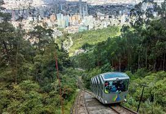
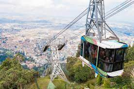
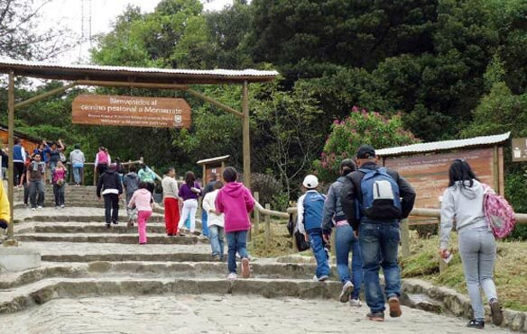

Por un sendero empedrado suben y bajan los peregrinos y amantes de la naturaleza en busca de paz y de una luz que ilumine su sendero, alivie sus quebrantos y de respuesta a sus más profundas inquietudes. Sin romper la armonía de la naturaleza ni perturbar el paisaje un Teleférico y un Funicular facilitan el acceso a miles de personas que desean alcanzar la cumbre y visitar en la cima del Cerro un hermoso santuario que preside y vigila tanto la ciudad capital como la sabana verde que le sirve de tapete. En el fondo del templo, en un camarín especial, la hermosa y venerable imagen del “Santo Cristo Caído a los azotes y clavado en la cruz”, preside silenciosa la gigantesca y constante peregrinación de sus devotos.
Se encuentran habilitados tres métodos principales de ascenso:
Funicular: Funciona de lunes a viernes entre 7:00 a.m. y 11:45 p.m., sábados de 7:00 a.m. a 4:00 p.m., los domingos entre 5:30 a.m. a 5:00 p.m. y los festivos de 6:30 a.m. a 11:45 a.m.
Teleférico: Funciona de lunes a sábados entre 12:00 m. a 11:00 p.m., domingos entre 8:30 a.m. a 4:30 p.m. y los festivos de 12:00 m. a 5:00 p.m.
Sendero peatonal: Abierto al público todos los días menos el martes,del ascenso al cerro a través del sendero se permite desde las 5:00 a.m. hasta la 1: 00 p.m. y el descenso por el sendero es permitido hasta las 4:00 p.m. En marzo de 2017 este fue reabierto después de varios meses de obras para su reacondicionamiento.
